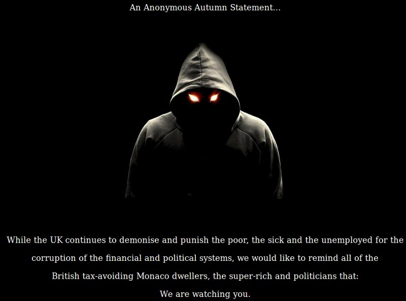

Question: What is a Hacker?
Answer
In computer networking, hacking is any technical effort to manipulate the normal behavior of network connections and connected systems. A hacker is any person engaged in hacking. The term "hacking" historically referred to constructive, clever technical work that was not necessarily related to computer systems. Today, however, hacking and hackers are most commonly associated with malicious programming attacks on the Internet and other networks.
Origins of Hacking
M.I.T. engineers in the 1950s and 1960s first popularized the term and concept of hacking. Starting at the model train club and later in the mainframe computer rooms, the so-called "hacks" perpetrated by these hackers were intended to be harmless technical experiments and fun learning activities.

Hacker (computer security)
In the computer security context, a hacker is someone who seeks and exploits weaknesses in a computer system or computer network. Hackers may be motivated by a multitude of reasons, such as profit, protest, challenge, enjoyment, or to evaluate those weaknesses to assist in removing them. The subculture that has evolved around hackers is often referred to as the computer underground and is now a known community. While other uses of the word hacker exist that are related to computer security, such as referring to someone with an advanced understanding of computers and computer networks, they are rarely used in mainstream context. They are subject to the longstanding hacker definition controversy about the term's true meaning. In this controversy, the term hacker is reclaimed by computer programmers who argue that someone who breaks into computers, whether computer criminal (black hats) or computer security expert (white hats),[5] is more appropriately called a cracker instead. Some white hat hackers[who?] claim that they also deserve the title hacker, and that only black hats should be called "crackers".
Hacker (term)
IHacker is a term that is used to mean a variety of different things in computing. Depending on the context, the term can refer to a person in any one of several distinct (but not completely disjoint) communities and hacker subcultures:
Hacker (computer security). People involved with circumvention of computer security. This primarily concerns unauthorized remote computer break-ins via communication networks such as the Internet (Black hats), but also includes those who debug or fix security problems (White hats), and the morally ambiguous Grey hats.
Hacker culture, an idea derived from a community of enthusiast computer programmers and systems designers, in the 1960s around the Massachusetts Institute of Technology's (MIT's) Tech Model Railroad Club (TMRC) and MIT Artificial Intelligence Laboratory. The hobbyist home computing community, focusing on hardware in the late 1970s (e.g. the Homebrew Computer Club) and on software (video games, software cracking, the demoscene) in the 1980s/1990s. Later this would go on to encompass many new definitions such as art, and Life hacking.